NORTH COAST → DABAO
一日票根-
巧晏漁坊龜吼漁港對面。先問今天早上進的是哪一種蟹。
-
金山老街先進慈護宮，再走金聲橋。四十分鐘到一小時。
-
硫磺只沾腳留下氣味，晚上跟大板根那池水對照。
-
大板根入住天光還在時走木棧道，看榕樹的板根，再泡湯。
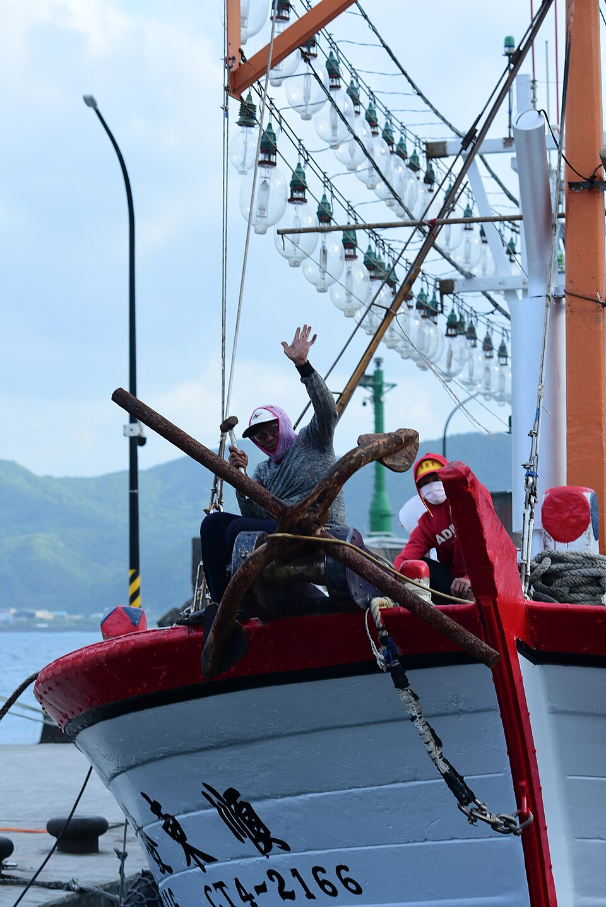
2026.09.27 · 週日 · 手機手冊
上午吃北海岸的蟹，午後讀一座不產金的老街，傍晚住進泰雅族大豹群離開之後的山谷。
往下，是今天的地理剖面
今日
週日漁港和老街都會擠。把日子收成一餐蟹、一座廟、一片板根、兩種泉，深度就夠。
NORTH COAST → DABAO
一日票根店約 10:30 開門，位子不多。地址是萬里區漁澳路 62 之 1 號，龜吼漁夫市集對面。
地理主線
早上背靠大屯火山，面向北海岸。溪很短，水一下山就入海，熱來自淺處的火山。
傍晚在三峽插角、大豹溪谷。水往下匯進三峽河、大漢溪，最後才在淡水出海。那池溫泉從地底約一千五百三十公尺上來。
若走台2甲陽金公路，車子會真的翻過圖中央那座火山，再落入盆地。週日午後容易塞。要準時入住，就往基隆或基金公路接國道進三峽，火山改由車窗遠看。
01 · 海岸
漁港在萬里，台2線上，野柳和翡翠灣之間。面北可以望見基隆嶼。
在地台語是「龜空」（Ku-khang）：早年一處通到海邊的石洞，海龜會上去產卵，所以叫龜孔、龜空，後來寫成龜吼。英文看板 Guihou 是華語拼音。
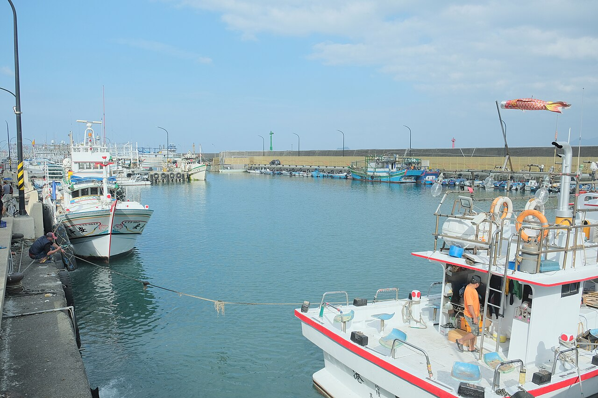
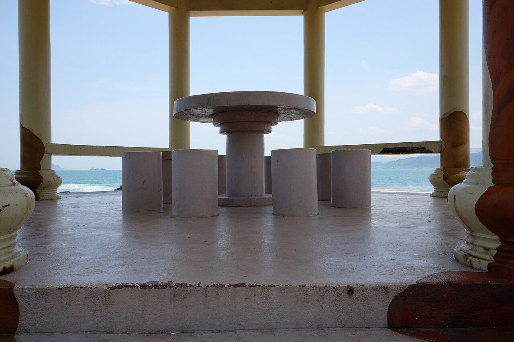

港區漁法有棒受網、刺網、一支釣、延繩釣、拖網。漁獲裡常見蟹、小卷、鱙、魩、鰹。九月到十一月是萬里蟹旺季，九月底以後三點蟹開始肥。你今天卡在這一季的門口。
02 · 餐桌
負責人蔡旻晏是在地的龜吼女兒，店名取「巧手料理，晏饗饕客」。大窗正對港灣。代表做法有金沙花蟹、乾燒三點蟹；想吃蟹本身的甜，清蒸最誠實。
今天早上進港的，是三點蟹還是花蟹？
這句比看菜單更接近漁港。六到八兩、殼滿、成熟，往往比一味挑最大隻更值得。
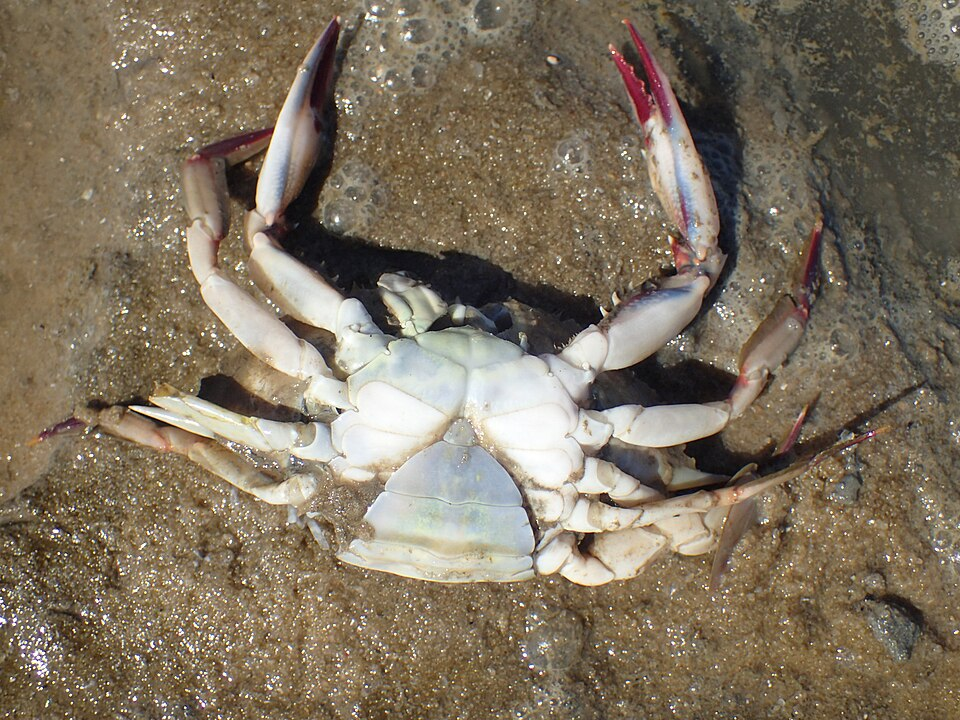
Portunus sanguinolentus 紅星梭子蟹
殼上三個暗色紅點，殼薄肉細。漁港的人常把它當家常極品。這張是標本，餐桌上的活蟹顏色更深、更亮。
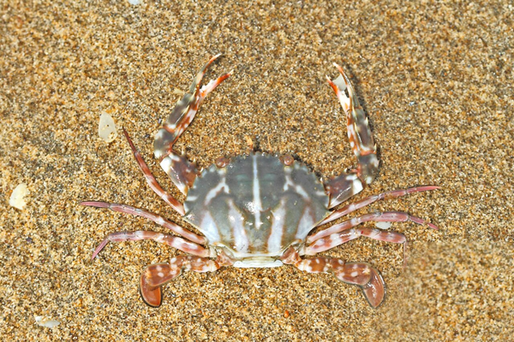
Charybdis feriata 鏽斑蟳
橘紅斑紋，肉結實、膏多，價位通常更高。端午前後與國曆九到十二月較肥。石蟳是萬里蟹的第三種。
標本照用來認種類。三點蟹：Mahomed Desai／CC BY 4.0。花蟹：Palmfly／CC BY-SA 3.0。
03 · 老街
沿台2線往西十來分鐘。舊名金包里，一般認為譯自平埔族社名。日治改名時留下「金」字，金礦其實在更東的金瓜石。
這裡是夾在大屯火山和海之間的小平原。磺溪、員潭溪是母親河。老街沿金包里溪展開，早期小船可以開到慈護宮旁的烏橋頭卸貨。
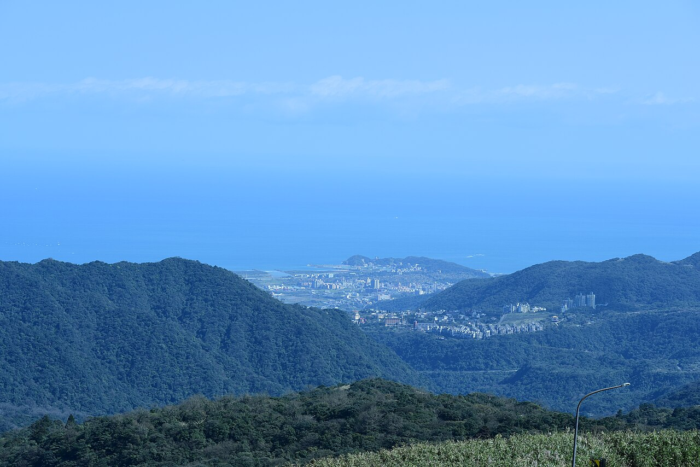
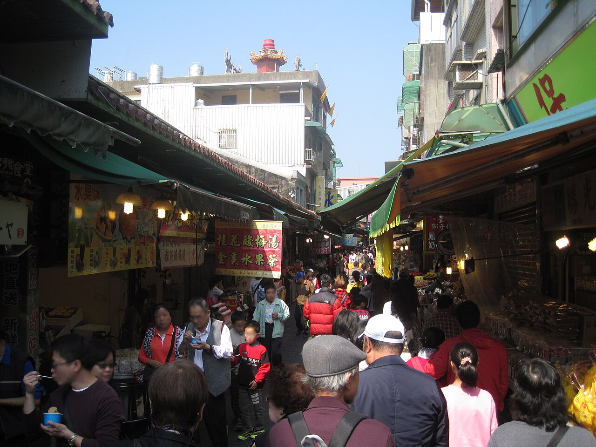
慈護宮在金包里街 16 號，俗稱大廟，2019 年登錄為歷史建築。嘉慶年間，漁民在野柳海邊石洞拾到一尊媽祖；嘉慶十四年（1809）在現址建天后宮，後來稱慈護宮。較小的那尊放在大尊神像腹內，稱二媽。
同治六年（1867）基隆大地震與海嘯重創這一帶。地方用數年重建，廟裡仍留著同治十二年（1873）的龍柱。也是這場地震之後，地裂湧出硫磺溫泉。
1895 到 1896 年，簡大獅的抗日勢力出沒在金包里與大屯山之間。日軍曾駐在慈護宮一帶，街屋一度被焚。你現在走的街，有很大一部分是火災之後再蓋的。
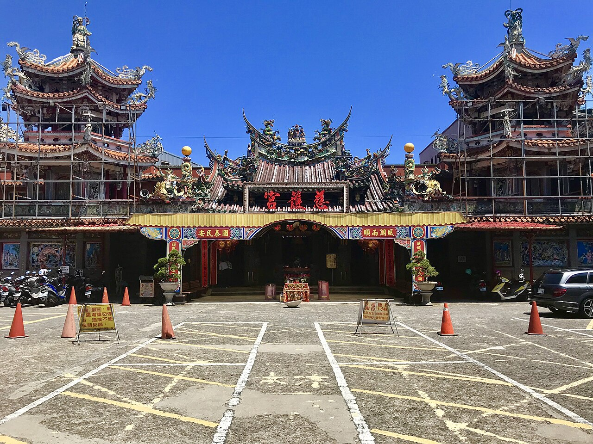
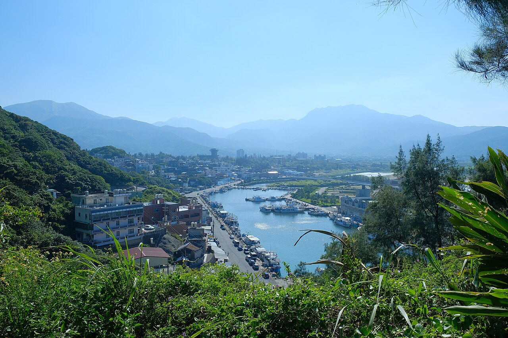
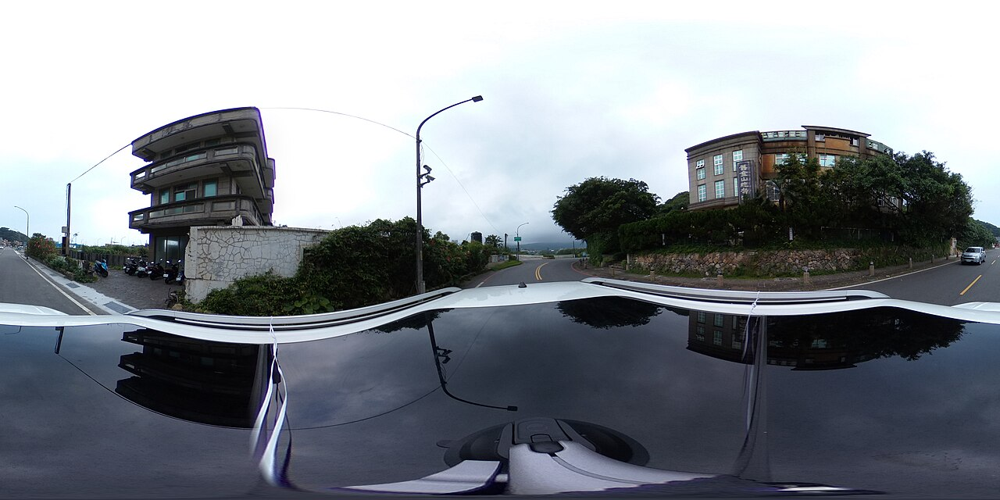
魚路古道的登山口在山邊。那是從前挑海魚翻越大屯、到士林換山貨的路。今天不必走，知道山的另一頭通向臺北盆地即可。
04 · 車上
九月下旬，大板根的木棧道會滑。薄外套就夠。入住前若天色還亮，先走森林，再回房泡湯。
大板根在新北市三峽區插角 79 號。地址寫插角里插角 79 號也可以找到。
05 · 山谷
飯店坐落的河谷，泰雅族大豹群住了很久。他們自大漢溪上游南遷而來，在大豹溪流域狩獵、農耕。
日治初期，總督府以隘勇線推進山林。1900 到 1907 年前後連續征伐。頭目瓦旦．燮促（Watan Syat）率眾抵抗，族人離開三峽，遷到今天桃園復興一帶。他在角板山等待返回的答覆，沒有等到。
1923 年，三井合名會社在插角設立大豹製茶工場，生產後來打進歐美的日東紅茶。山另一頭還有大寮茶場。戰後由臺灣農林公司承接，茶葉退潮後，這裡變成森林溫泉酒店。太子行館是這段歷史的上層，底層是一個部落離開墳墓之地。大豹後人戰後仍有復歸三峽的訴求。
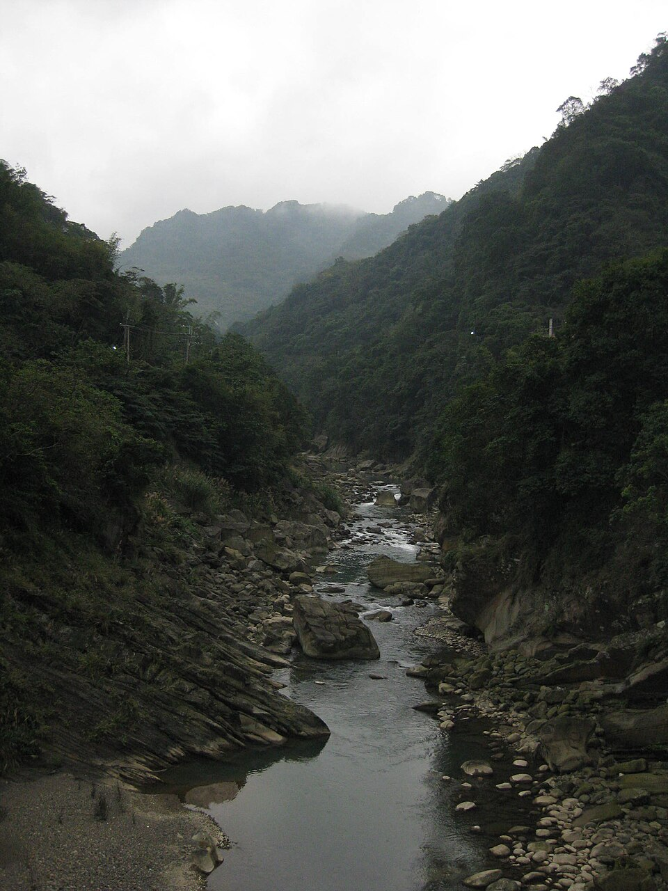
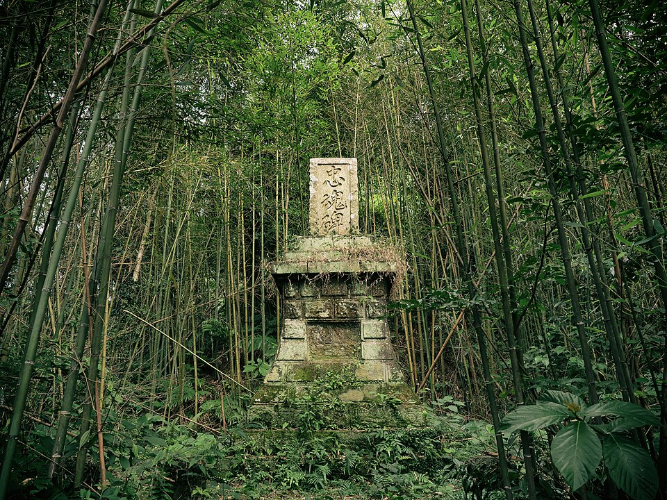
園區海拔不到三百公尺，留著以榕樹為主的亞熱帶闊葉林。北臺灣的平地和低山大多已成茶園、梯田和聚落，所以這一片能留著，本身就罕見。把它讀成「開茶園、製腦之後仍留下來的低海拔森林」，比把它想成從未有人走過的原始林，更接近這塊地的履歷。
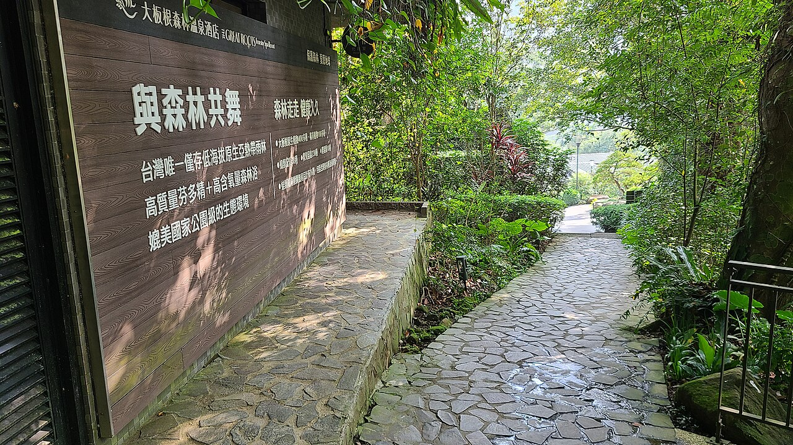
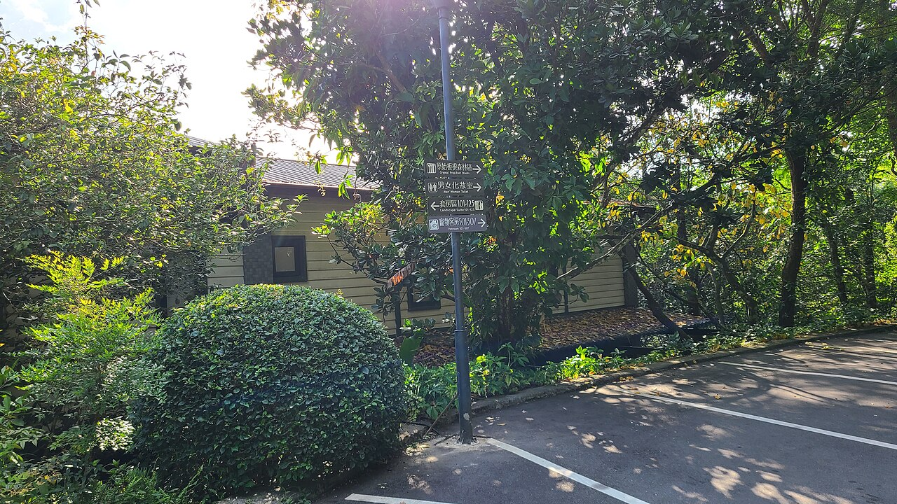
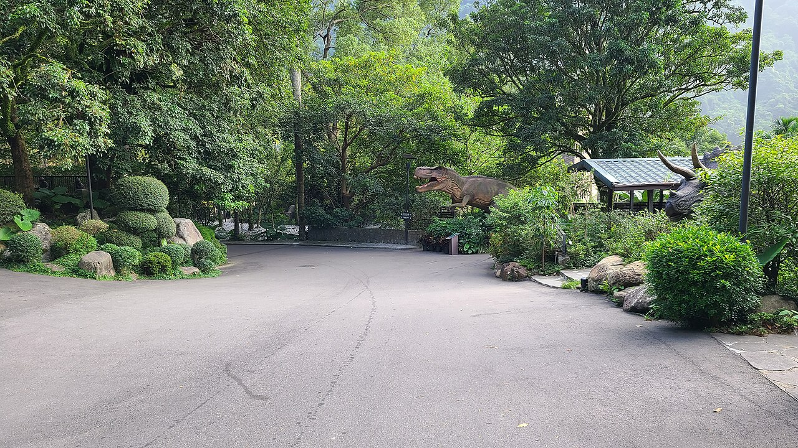
06 · 兩種水
若中午在金山聞過硫磺，晚上進池時對一下。兩池都叫溫泉，熱的來路差了一整個山系。
帶走
勾過的項目會留在這支手機上，重新打開還在。
照片皆來自維基共享資源，頁面內已附作者與授權。點選可回原檔。手冊文字是為這趟行程整理的導覽，現場建築與市集可能比舊照更新。